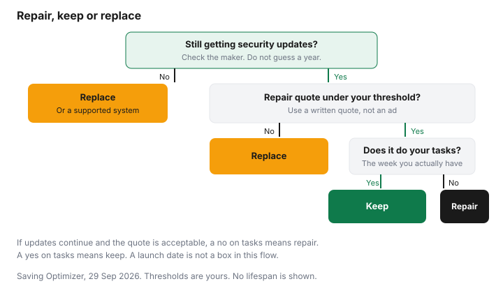

Technology · Canada
When to Upgrade a Phone, Laptop or TV: Repair, Battery Health and Waiting Out the Cycle
Upgrade a phone, laptop or TV when it no longer gets security updates, when repair costs no longer make sense next to replacement, or when it cannot do your tasks, not because a new model launched. In Canada, section 41.121 of the Copyright Act allows bypassing digital locks to repair a device. Most households do not need a new phone, laptop or television because a keynote said so. They need one when the device no longer gets security updates, when a repair is no longer sensible next to a replacement, or when it cannot do the work of the week. This page is that test. It does not state how many years a device lasts. A full cloud library can look like a broken phone. That problem is on the storage guide, not on a trade-in form.
Key takeaways
- Upgrade on security updates, repair cost versus replacement, and whether the device still does your tasks. A launch date is not one of those tests.
- Battery health is a screen you can read and a repair you can price. This guide does not quote a battery price. Check the maker or a shop.
- Software support years live on the maker's page. Check that policy. Do not borrow a number from an ad.
- Section 41.121 of the Copyright Act is a repair exception for technological protection measures. It is not legal advice, and it does not excuse copyright infringement.
- In Quebec, parts and repair information rules have been in force since 5 October 2025. A warranty of good working order for many new electronics starts 5 October 2026.
Signs it's time vs marketing cycles
A marketing cycle is the date a new model is announced. It does not measure your battery, your updates or your tasks.
Write three lines for the device you have. Does the maker still ship security updates for this model? What did a repair shop or the maker quote, in writing, for the fault you have? Can you still do the tasks on your list, such as a work app, a class portal or a nightly program? If the answers are yes, yes at a price you accept, and yes, the launch is not a reason to spend.
The appliance version of this test is on the repair-or-replace guide. A volunteer bench, when you want one, is on the repair-café guide. Electronics add accounts and software that a kettle does not have.
| Device | Signals that belong in the decision | Signals that do not |
|---|---|---|
| Phone | Battery health, no more security updates, a repair quote versus the price of a replacement, and whether your apps still run | A new colour, a camera slogan, or a carrier upgrade offer by itself |
| Laptop | The maker's end of security updates, RAM or storage that blocks the work you do, and a repair quote versus replacement | A back-to-school flyer, or a thinner chassis, when the current machine still gets updates |
| TV | A fault you can price, parts availability, and whether the picture still suits the room | A larger size in an ad, or a new smart-TV logo, when the set still works |
Battery health and replacement
Phones and laptops show battery condition in settings, or they do not. Read the screen the maker provides, and write down the figure before a store erases it.
A TV does not have that screen. Its "battery" problem is usually a backlight or a power board, which is a repair quote, not a percentage. Ask the maker and an independent shop for a written price. This guide does not quote one.
A battery replacement is the right first quote when the rest of the phone still gets updates and still does the day. If the maker has stopped updates, a fresh battery does not restore security patches. Price the battery anyway so you can see the repair column in the worksheet below. In Quebec, a parts price that discourages the repair can be challenged. The Office de la protection du consommateur's repair page, as of 29 Sep 2026, uses an example: a $200 part to repair a good that cost $250 could be considered unreasonable. That pair is the Office's illustration, not a phone-battery price.
Software support windows
Security updates are the line between a device you can keep and a device you are choosing to leave unpatched. Check the maker's support policy for the exact model.
This page does not state a number of years for a phone, a laptop or a television platform. A browser update is not the same as an operating-system update. Get Cyber Safe, on its phones and tablets page as of 29 Sep 2026, tells you to install system updates when they are offered, or to turn on automatic updates if you have that switch.
When the policy says support has ended, the practical choices are a supported operating system the hardware can still run, a refurbished replacement that is still supported, or a new device. The refurbished guide is the buying checklist if you go that way. The trade-in guide is what to do with the old phone after you have wiped it.
Repair vs replace math with made-up inputs
Example with made-up inputs. The dollars below are not quotes, not averages, and not a shop's price list. They exist so the arithmetic has somewhere to land. Replace each number with a written quote before you spend.
| Device in the example | Repair | Replace | Repair as a share of replace |
|---|---|---|---|
| Phone | $120 | $800 | $120 ÷ $800 = 15 percent |
| Laptop | $400 | $1,000 | $400 ÷ $1,000 = 40 percent |
| TV | $450 | $750 | $450 ÷ $750 = 60 percent |
On these made-up inputs, the phone repair is a small share of a replacement, the laptop repair is less than half, and the TV repair is more than half. A household can still repair the TV if the quote is real and the set fits the room, or replace the phone if updates have ended even though the battery share looks small. The share is not a rule. It is a way to see the quote. Add delivery and any environmental fee to the replace column when you redo it with real paperwork. Those fee amounts are not in this example.

Quebec repair-parts rules (in force 5 Oct 2025)
Since 5 October 2025, the Office de la protection du consommateur says merchants and manufacturers must tell you whether three things are available, partly available, or not available: replacement parts, repair services, and the information needed to maintain or repair the good, in French. The good can be new or used, if you bought or leased it from a merchant.
They can decline only by a written warning before the sale. If they did not warn you and a part is missing, you can ask them to repair at their expense. The Office says they then have 10 days to tell you, in writing, how long the repair will take. The page also says parts and services must be offered at a reasonable price, and that repair information provided online has to be free, with a stated exception for some automobile data.
That availability rule is not the warranty of good working order. The good-working-order warranty, on quebec.ca as of 29 Sep 2026, starts for many new goods bought from a merchant on 5 October 2026: 3 years for a laptop, desktop, cellphone, tablet or console, and 4 years for a television, from the delivery date, automatic and free. The Quebec warranty guide is the longer page. Outside Quebec, check your province. A store plan is optional everywhere. Read the extended-warranty guide before you add one.
Federal copyright law is a different layer, and this is not legal advice. Section 41.121 of the Copyright Act, current to 21 September 2026 on the Justice Laws site, says the anti-circumvention rule in paragraph 41.1(1)(a) does not apply to a person who circumvents a technological protection measure for the sole purpose of maintaining or repairing a product, including diagnosing it, when the protected work is part of the product. The exception also applies when you do that for another person. It does not apply if what you do infringes copyright. The statute does not set a repair price, and it does not require a manufacturer to sell you a part. Quebec's parts rules are the provincial layer for that second question.
| Rule | What the page says | Where to confirm |
|---|---|---|
| Copyright Act, s. 41.121 | Circumventing a technological protection measure solely to maintain or repair a product, including diagnosis, does not by itself breach the anti-circumvention rule. Not legal advice. Infringement is still infringement | Justice Laws, s. 41.121. Act current to 21 September 2026 |
| Quebec parts and repair information, from 5 October 2025 | Parts, repair services and repair information, unless the merchant or manufacturer warned you in writing before the sale. Ten days to propose a repair timeline if you were not warned. Reasonable prices | Office de la protection du consommateur |
| Quebec warranty of good working order, from 5 October 2026 | New goods from a merchant. Three years for a laptop, desktop, phone, tablet or console. Four years for a TV. From delivery. Automatic and free | quebec.ca |
Upgrade checklist
Keep the device when it still receives security updates, the repair quote is one you accept, and it does the tasks. Repair when updates continue and the quote is the sensible share of a replacement you would actually buy.
Replace when updates have ended, or the quote is close to a replacement that meets the spec list, or the tasks have outgrown the hardware. If you replace, compare a refurbished unit and a trade-in only after those checks. If you are in Quebec, look for the parts disclosure and, for a new good from 5 October 2026, the good-working-order duration near the price.
Sources
- Office de la protection du consommateur, droit à la réparation, as of 29 Sep 2026. Information duties since 5 October 2025. Parts, services and information in French. Written warning is the exemption. Ten days to state a repair timeline. The page's illustration of an unreasonable part is $200 on a good that cost $250. That pair is the Office's example.
- Office de la protection du consommateur, garantie de disponibilité, page marked modified 29 September 2026. Same three elements. The good may be new or used. Ten-day written response.
- Copyright Act, section 41.121, Justice Laws, as of 29 Sep 2026. Act current to 21 September 2026. Repair and maintenance exception, including diagnosis. Not legal advice.
- Quebec, Garantie de bon fonctionnement, as of 29 Sep 2026. New goods from 5 October 2026. Three years for computers, phones, tablets and consoles. Four years for televisions.
- Osler, Hoskin & Harcourt LLP, Bill 29 summary, 30 July 2025. A law-firm overview of the 5 October 2025 amendments. The Office's pages are the consumer steps.
- Get Cyber Safe, phones and tablets, as of 29 Sep 2026. Install system updates.
Frequently asked questions
How do I know it's time to replace my phone?
Replace it when it no longer receives security updates, when a repair costs more than you are willing to pay relative to a replacement, or when it cannot do the tasks you actually have. A new model announcement is a marketing signal, not one of those three. Check the maker's support page for the update date, and check a repair price with the maker or a shop before you decide.
Is it worth replacing a phone battery?
It is worth pricing when the phone still gets security updates and still does your tasks. This guide does not quote a battery-repair price. Ask the maker or a repair shop, then compare that quote with a replacement using the made-up worksheet only as arithmetic practice. In Quebec, parts have to be available on reasonable terms unless you were warned in writing before you bought.
When does a laptop stop being safe to use?
Treat the maker's end of security updates as the date to plan a repair onto a supported system or a replacement. A laptop can still turn on after that date, and it is no longer getting the fixes Get Cyber Safe tells you to install. This page does not state a lifespan in years. Check the maker's support policy for that model.
Should I repair or replace a TV?
Repair when the set still does the job and a written repair quote is acceptable next to the price of a replacement, including delivery and any environmental fee. Replace when parts are unavailable and you were not warned before purchase, or when the repair quote is close to a new set that fits the room. This is a worksheet, not a brand recommendation. In Quebec, a new TV from 5 October 2026 has a 4-year warranty of good working order.
What repair rights do Canadians have?
The Copyright Act's section 41.121 says circumventing a technological protection measure solely to maintain or repair a product, including diagnosis, does not by itself breach the anti-circumvention rule. That is a description of the statute, not legal advice, and it does not cover copyright infringement. Quebec adds parts and repair-information rules in force since 5 October 2025, and a warranty of good working order for many new goods from 5 October 2026. Other provinces differ, so check your province.
Researched and drafted with AI assistance and fact-checked against official Canadian sources. How we create content.
Disclosure: Refurbished retailer offers are an offer type. Saving Optimizer may earn a commission if a partner link is added later. No partnership is claimed. An offer link does not change a repair quote, a support date or a warranty. Education only.